글. 이효정 사진. 이승헌
조직이 성공하기 위한 공식은 생각보다 간단하다. 목표에 도달하기 위해 구성원이 한 방향을 바라보고 노력하는 것. 이 공식을 충직하게 이행하는 사람들이 모인 곳이 있다. 바로 한국남부발전의 자회사인 대구그린파워다. 대구그린파워가 목표를 향해 순항할 수 있는 건 류호용 대표의 직원들에 대한 흔들림 없는 믿음이 있었기에 가능할 수 있었다.
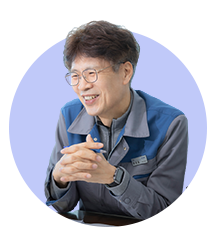 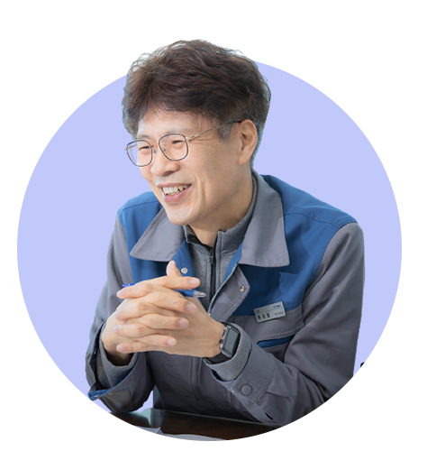
안녕하세요. 대구그린파워 류호용 대표입니다. 저는 입사 후 계속 한국남부발전에 몸담고 있다가 코스포영남파워 전무를 거쳐 현재 대구그린파워의 대표로 일하고 있습니다. 이곳에 온 지 벌써 1년 1개월이 지나가네요. 제 직장생활의 대부분을 한국남부발전에서 업무를 해왔습니다. 한국남부발전과는 떼려야 뗄 수 없는 사이이죠. 하하
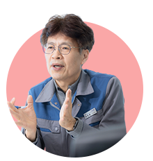 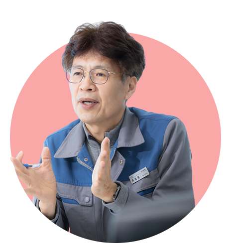
대구그린파워는 발전소치고는 흔치 않게 도심인 대구혁신지구에 있습니다. 혁신지구에 전기와 열을 공급하기 위해 승인된 발전소죠. 2010년 법인이 승인되었고 전기와 열 생산은 2014년부터 본격적으로 시작했습니다. 50여 명의 직원이 안정적으로 전력을 공급하기 위해 노력하고 있습니다. 한국남부발전뿐만 아니라 신한은행 컨소시엄, 롯데건설, 대성에너지 4개 회사가 대구그린파워 지분을 보유하고 있죠. 그러다 보니 각 회사의 문화가 잘 융합되어 있습니다. 각각의 문화가 적절하게 어울리는 것도 특색이죠. 참고로 대구그린파워는 LNG(액화천연가스)를 사용하여 415MW급 전력공급 설비를 갖추고 있습니다.
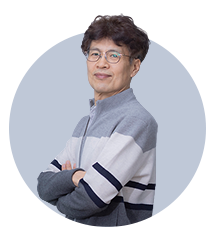 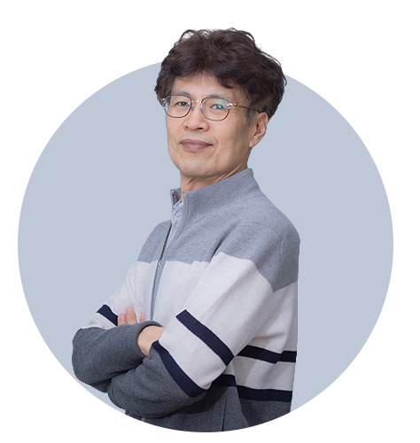
개인적으로 열정은 ‘책임감과 프로의식’을 가지고 어떤 일이라도 헤쳐 나갈 수 있는 상태라고 생각합니다. 스스로 맡은 일에 책임감을 품고 누구보다 그 일을 잘 해내겠다는 프로의식, 그것이 바로 열정의 핵심이 아닐까요? 늘 직원들에게 강조하는 것도 책임감과 프로의식입니다. 저희가 비록 작은 규모의 회사이지만 직원들의 열정은 어느 회사에 뒤지지 않는다고 자부합니다.
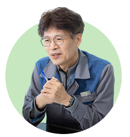 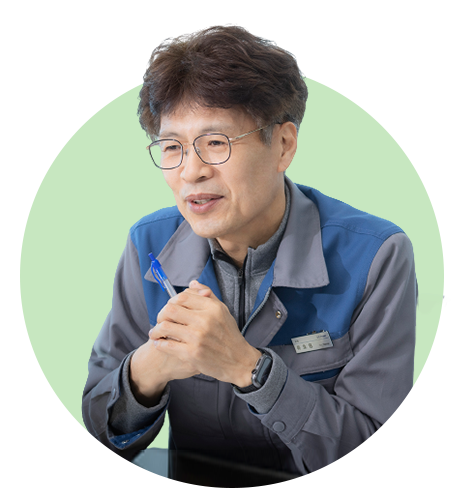
우리 회사의 시작은 맨땅에서부터였지요. 특히 도심에 있다 보니 운영유지비가 많이 들어갑니다. 그래서 재무여건이 취약한 부분이 있습니다. 그동안 역대 대표님들과 구성원들은 재무여건을 개선하기 위해 열정을 쏟아부었습니다. 그리고 10여 년 동안 모두가 합심하고 단합해 저희만의 업무 프로세스도 만들어 놓았고요. 재무상황 개선과 함께 가장 신경을 써온 부분이 안전입니다. 중대재해처벌법이 생기기 전부터 안전을 제일의 과제로 삼았죠. 안전 관련 책임도 팀이 아닌 실에서 관리합니다. 저희와 비슷한 규모의 회사에서 실 단위가 잘 없지만 안전이 무엇보다 중요하기에 저흰 실에서 도맡고 있죠. 그 덕에 현재까지 단 한 건의 안전사고도 없어요.
지난해 대구지방고용노동청으로부터 이런 부분을 인정해주는 안전 관련 상을 받기도 했죠. 업무의 효율성도 열정에서 빼놓을 수 없네요. 일례로 회의가 소집되면 하나의 일을 15분 내로 결정합니다. 단계적인 보고 방식이 아니라 부장, 실장, 대표가 한꺼번에 회의를 진행해 시간적인 소모를 줄인 거죠. 빠른 의사결정을 위해 조직 문화 개선에도 열심히 해오고 있는 일입니다.
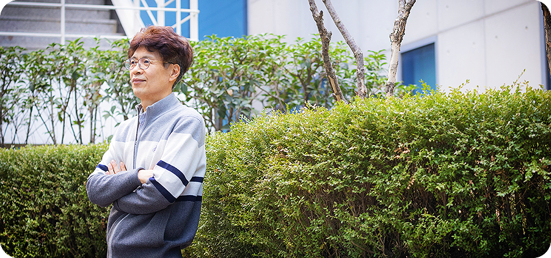
구성원들이 만족하고 행복해야 자기 일에 대한 충실도도 높아진다고 생각합니다. 이들의 작은 목소리 하나도 놓치지 않기 위한 기구가 직장협의회입니다. 이곳을 활용해 의사소통과 합리적인 대안 도출에 지난해보다 더욱 신경을 쓸 것입니다. 또한 올해는 SMP상한제와 계획예방정비가 예정되어 약 2달간 발전소 정지가 예정되어 더더욱 재무여건이 악화될 것으로 전망됩니다. 수익을 창출해야 하는 회사의 입장에서 그렇지 못한 기간이기에 창의적인 혁신을 도출해야 합니다. 저를 비롯해 전 직원이 함께 이 부분에서 더 나은 방향으로 가기 위해 다양한 아이디어를 내어놓을 예정입니다.
수많은 일이 스쳐 지나가네요. 많은 일에서 제가 가장 열정적이었던 순간은 2014년의 요르단 대한풍력 발전사업을 진행할 때입니다. 당시 전 해외사업을 담당하는 부장이었습니다. 사업을 진행할 때 풍력발전기 건설에 대해 정부와 한국남부발전 내부에서는 회의적 반응이 컸습니다. 국가 사업리스트에서도 빠지기도 했고요. 내외부의 사람들을 설득하기 위해 수출입은행, 한국무역공사, 기재부 등을 문지방이 닳도록 수십 차례 찾아갔었습니다. 여담이지만 욕도 많이 먹었죠. 하하.
좌절하고 포기할까도 싶었지만 그럴 때마다 곁에서 응원하는 파트너사와 부하직원들이 있어 다시금 용기를 내었습니다. 지금은 해당 사업의 영업이익률이 높게 나와서 한국남부발전의 효자사업이 되었다고 들었습니다. 저의 사업장은 달라졌지만 늘 그때만 생각하면서 웃음이 납니다. 약 5년간 사업을 성공시키기 위해 달려온 그 일이 제 회사 생활 중 열정이라는 단어를 붙여도 부끄럽지 않네요.
가장 중요한 자랑거리는 바로 구성원들이지요. 늘 직원들에게 ‘여러분은 그 누구에게도 뒤지지 않습니다’라고 얘기합니다. 맡은 일에 대한 프로의식을 가지고 끝까지 해결하려고 노력하는 이들이 바로 대구그린파워 직원들이죠. 열정 그 자체입니다. 한 예가 지난해 세무조사 때 일입니다. 대구그린파워의 세무 담당자는 한 명뿐입니다. 담당 직원은 평소에 세무 관련해서 꼼꼼하게 일을 하고 이번 세무조사 기간에 열정적으로 업무에 임했죠. 그 결과 추징금이 제로였습니다. 한 회사가 그러긴 쉽지 않은 일이죠. 어디 세무조사 담당 차장뿐일까요? 셀 수 없는 많은 이가 대구그린파워를 위해 움직이고 있습니다. 그래서 저희의 자랑은 직원입니다. 아, 지하철에서 도보로 15분밖에 걸리지 않는다는 것도 자랑할 수 있습니다. 하하
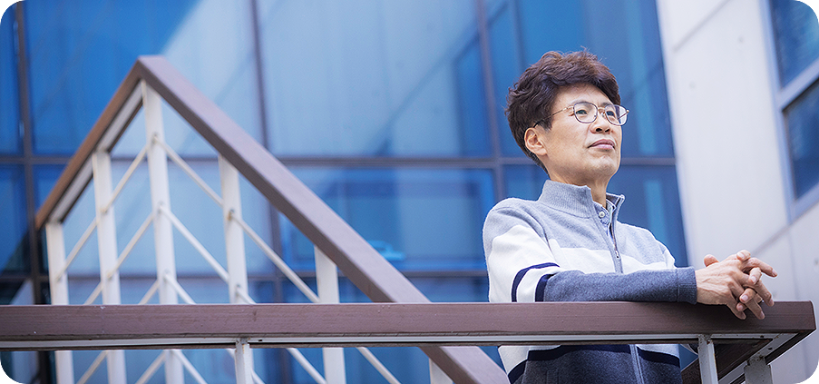
네. 그렇습니다. 최근에 이나모리 가즈오의 저서 《인생을 바라보는 안목》을 읽었습니다. 경영인인 저자는 우리의 삶이나 조직 생활에 가장 중요한 것은 공식으로 내세웠는데요. 그 공식은 ‘인생과 일의 결과 = 사고법 × 열의 × 능력’입니다. 저도 이 부분에 동감합니다. 우리 직원들은 높은 열의와 능력을 지녔습니다. 거기에 노력을 더하고 있지요. 저는 한 회사의 대표가 이들의 열의, 능력에 맞춰 사고력을 제시해주는 사람이라고 생각합니다. 여기서 사고력은 방향입니다. 함께 갈 수 있는 방향을 설정하고 이들이 잘하도록 북돋아 주는 일은 제 몫이죠. 저와 직원들의 역량이 모여 지금의 대구그린파워가 있다고 생각합니다.
대구그린파워는 조직, 인력, 설비용량이 적지만 굉장히 강하고 내실 있는 조직입니다. 이런 우리 회사가 타 발전소에서 ‘벤치마킹하러 오는 회사’가 되었으면 합니다. 의사결정, 업무 프로세스 등 다양한 업무를 벤치마킹할 수 있는 그런 회사 말입니다. 저의 이상향이죠. 이미 지난해에 우리의 자재관리 시스템을 살펴보기 위해 타 회사에서 온 적도 있습니다. 제 이상향에 진일보한 일이 아닐까 싶네요. 하하. 그리고 대구그린파워 하면 누구나 일해보고 싶은 곳, 배워보고 싶은 곳, 열정적인 사람이 많은 곳으로 인식되었으면 합니다.
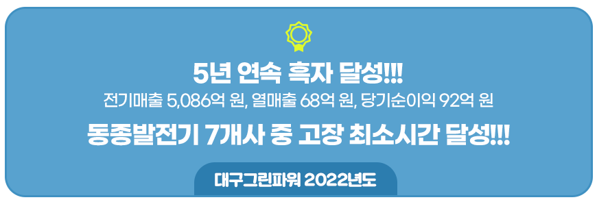
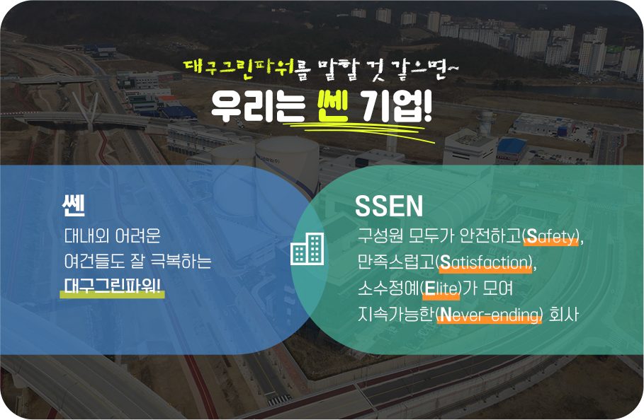 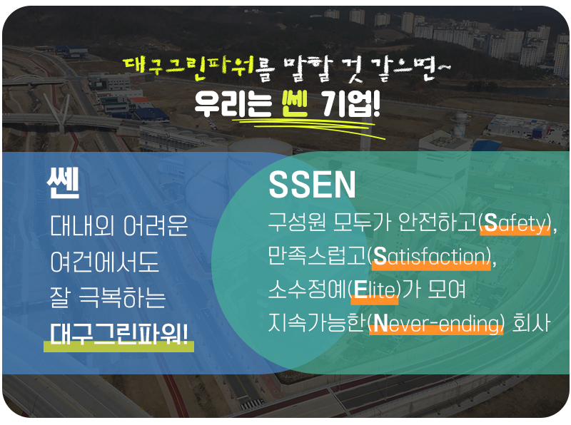